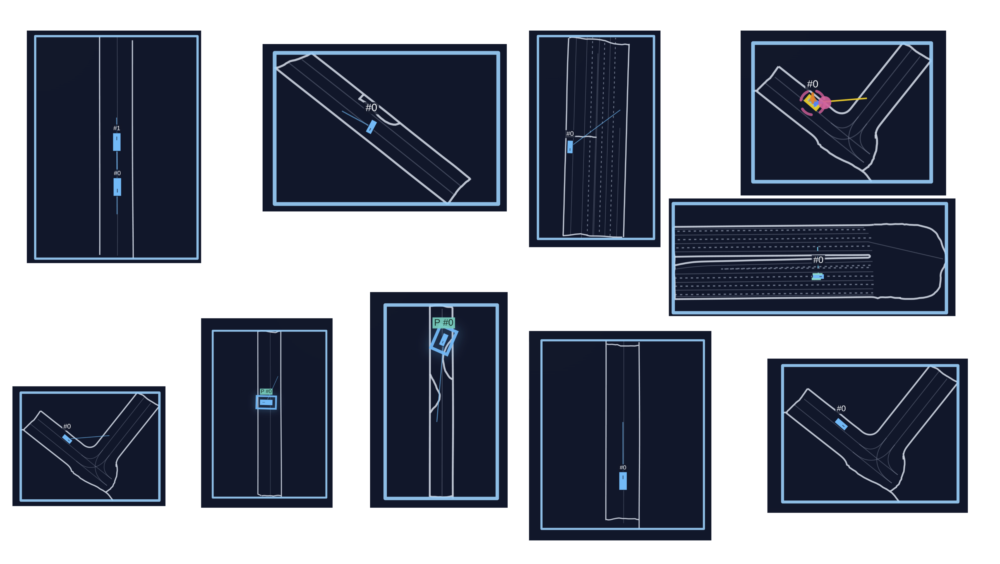
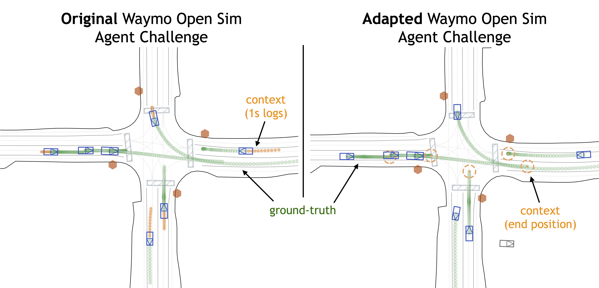
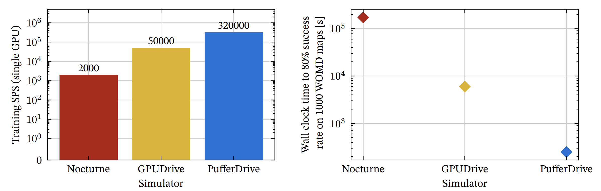

PufferDrive


PufferDrive is a high-throughput autonomous driving simulator built on PufferLib. Train and evaluate multi-agent driving policies with fast vectorized stepping, streamlined data conversion, and ready-made benchmarks.
Note
We just released PufferDrive 2.0! Check out the release post.
Try it in your browser
Hold Left Shift and use arrow keys or WASD to control the vehicle. Hold space for first-person view and ctrl to see what your agent is seeing :)
Highlights
- Data-driven, multi-agent drive environment that trains agents at 300K steps per second.
- Integrated benchmarks for distributional realism and human compatibility.
- Raylib-based rendering for local or headless render/export.
Quick start
- Follow Getting started to install, build the C extensions, and run
puffer train puffer_drive. - Consult Simulator for how actions/observations, rewards, and
.inisettings map to the underlying C environment and Torch policy. - Prepare drive map binaries with the steps in Data.
- Evaluate a policy with the commands in Evaluation and preview runs with the Visualizer.
Workflow
Install & Build
Set up the environment, install dependencies, and compile the native extensions.
Open guidePrepare Data
Download WOMD/Carla data from Hugging Face and convert to map binaries.
Open guideTrain & Evaluate
Train agents and evaluate them with WOSAC and human-replay benchmarks.
Open guideRepository layout
pufferlib/ocean/drive: Drive environment implementation and map processing utilities.resources/drive/binaries: Expected location for compiled map binaries (outputs of the data conversion step).scripts/build_ocean.sh: Helper for building the Raylib visualizer and related binaries.examples,tests,experiments: Reference usage, checks, and research scripts that pair with the docs pages.
Getting started
This page walks through installing PufferDrive from source, building the native extensions, and running a first training job.
Prerequisites
- Python 3.9+ with a virtual environment manager (
uv,venv, orconda). - A C/C++ toolchain for building the bundled extensions (GCC/Clang + make).
- PyTorch installed inside your environment (pick the CPU/GPU wheel that matches your setup).
Installation
Clone and set up an isolated environment:
git clone https://github.com/Emerge-Lab/PufferDrive.git
cd PufferDrive
uv venv .venv && source .venv/bin/activate
uv pip install -e .
Build the C extensions in place:
python setup.py build_ext --inplace --force
Run this with your virtual environment activated so the compiled extension links against the correct Python.
When to rebuild the extension
- Re-run
python setup.py build_ext --inplace --forceafter changing any C/Raylib sources inpufferlib/ocean/drive(e.g.,drive.c,drive.h,binding.c,visualize.c) or after pulling upstream changes that touch those files. This regenerates thebinding.cpython-*.soused byDrive. - Pure Python edits (training scripts, docs, data utilities) do not require a rebuild; just restart your Python process.
Verify the setup
Once map binaries are available (see Data), launch a quick training run to confirm the environment, data, and bindings are wired up correctly:
puffer train puffer_drive
For multi-node training (only uses Data Parallelism with torch ddp)
torchrun --standalone --nnodes=1 --nproc-per-node=6 -m puffer train puffer_drive
If map binaries are missing, follow the steps in Data to generate them before training. See Visualizer for rendering runs and Evaluation for benchmark commands.
Logging with Weights & Biases
Enable W&B logging with the built-in CLI flags (the package is already a dependency in setup.py):
puffer train puffer_drive --wandb --wandb-project pufferdrive --wandb-group local-dev
- Add
--wandbto turn on logging;--wandb-projectand--wandb-groupset the destination in W&B. - Checkpoint uploads and evaluation helpers (
pufferlib/utils.py) will log WOSAC/human-replay metrics and rendered videos when W&B is enabled.
Training agents
Training
Basic training
Launch a training run with Weights & Biases logging:
puffer train puffer_drive --wandb --wandb-project "pufferdrive"
Environment configurations
Default configuration (Waymo maps)
The default settings in drive.ini are optimized for:
- Training in thousands of Waymo maps
- Short episodes (91 steps)
Carla maps configuration
For training agents to drive indefinitely in larger Carla maps, we recommend modifying drive.ini as follows:
[env]
goal_speed = 10.0 # Target speed in m/s at the goal. Lower values discourage excessive speeding
goal_behavior = 1 # 0: respawn, 1: generate_new_goals, 2: stop
goal_target_distance = 30.0 # Distance to new goal when using generate_new_goals
# Episode settings
episode_length = 300 # Increase for longer episode horizon
resample_frequency = 100000 # No resampling needed (there are only a few Carla maps)
termination_mode = 0 # 0: terminate at episode_length, 1: terminate after all agents reset
# Map settings
map_dir = "resources/drive/binaries/carla"
num_maps = 2
this should give a good starting point. With these settings, you’ll need about 2-3 billion steps to get an agent that reaches most of it’s goals (> 95%) and has a combined collsion / off-road rate of 3 % per episode of 300 steps.
Note
The default training hyperparameters work well for both configurations and typically don’t need adjustment.
Note
The checkpoint at
resources/drive/puffer_drive_weights_carla_town12.binis an agent trained on Carla town 01 and 02 with these settings. This is the one used in the interactive demo.
Controlled experiments
Aside from train and sweep, we support a third mode for running controlled experiments over lists of values:
puffer controlled_exp puffer_drive --wandb --wandb-project "pufferdrive2.0_carla" --tag speed
Define parameter sweeps in drive.ini:
[controlled_exp.env.goal_speed]
values = [10, 20, 30]
This will launch separate training runs for each value in the list, which cab be useful for:
- Hyperparameter tuning
- Architecture search
- Running multiple random seeds
- Ablation studies
Interact with agents
Drive with trained agents
You can take manual control of an agent in the simulator by holding LEFT SHIFT and using the keyboard controls. When you’re in control, the action values displayed on screen will turn yellow.
Local rendering
To launch an interactive renderer, first build:
bash scripts/build_ocean.sh drive local
then launch:
./drive
This will run demo() with an existing model checkpoint.
Controls
General:
- LEFT SHIFT + Arrow Keys/WASD - Take manual control
- SPACE - First-person camera view
- Mouse Drag - Pan camera
- Mouse Wheel - Zoom
Classic dynamics model
- SHIFT + UP/W - Increase acceleration
- SHIFT + DOWN/S - Decrease acceleration (brake)
- SHIFT + LEFT/A - Steer left
- SHIFT + RIGHT/D - Steer right
Each key press increments or decrements the action level. For example, tapping W multiple times increases acceleration from neutral (index 3) → 5 → 6 (maximum acceleration). We assume no friction, so releasing all keys maintains constant speed and heading.
Jerk dynamics model
- SHIFT + UP/W - Accelerate (+4.0 m/s³ jerk)
- SHIFT + DOWN/S - Brake (-15.0 m/s³ jerk)
- SHIFT + LEFT/A - Turn left (+4.0 m/s³ lateral jerk)
- SHIFT + RIGHT/D - Turn right (-4.0 m/s³ lateral jerk)
Actions are applied directly when keys are pressed. Pressing W always applies +4.0 m/s³ longitudinal jerk, regardless of how long the key is held.
PufferDrive simulator guide
A high-performance autonomous driving simulator in C with Python bindings.
Entry point: pufferlib/ocean/drive/drive.py wraps pufferlib/ocean/drive/drive.h
Configuration
Basic settings
| Parameter | Default | Description |
|---|---|---|
num_maps | - | Map binaries to load |
num_agents | 32 | Policy-controlled agents (max 64) |
episode_length | 91 | Steps per episode |
resample_frequency | 910 | Steps between map resampling |
Tip
Set
episode_length = 91to match Waymo log length for single-goal tasks. Use longer episodes (e.g., 200+) withgoal_behavior=1for multi-goal driving.
Control modes
control_vehicles: Only vehiclescontrol_agents: All agent types (vehicles, cyclists, pedestrians)control_tracks_to_predict: WOMD evaluation modecontrol_sdc_only: Self-driving car only
Note
control_vehiclesfilters out agents marked as “expert” and those too close to their goal (<2m). For full WOMD evaluation, usecontrol_tracks_to_predict.
Goal behaviors
Three modes determine what happens when an agent reaches its goal:
Mode 0 (Respawn) - Default:
- Agent teleports back to starting position
- Other agents removed from environment (prevents post-respawn collisions)
- Useful for maximizing environment interaction per episode
Mode 1 (Generate new) - Multi-goal:
- Agent receives a new goal sampled from the road network
- Can complete multiple goals per episode
- Tests long-horizon driving competence
Mode 2 (Stop):
- Agent stops in place after reaching goal
- Episode continues until
episode_length - Simplest setting for evaluation
Important
Goal behavior fundamentally changes what “success” means:
- Mode 0/2 (single goal): Success = reaching the one goal without collision/off-road
- Mode 1 (multi-goal): Success = completing ≥X% of sampled goals cleanly
Config files: pufferlib/config/ocean/drive.ini (loaded first), then pufferlib/config/default.ini
Episode flow
- Initialize: Load maps, select agents, set start positions
- Step loop (until
episode_length):- Move expert replay agents (if they exist)
- Apply policy actions to controlled agents
- Update simulator
- Check collisions
- Assign rewards
- Handle goal completion/respawns
- Compute observations
- End: Log metrics, reset
Note
Maps are resampled every
resample_frequencysteps (~10 episodes with default settings) to increase map diversity.
Caution
No early termination - episodes always run to
episode_lengthregardless of goal completion or collisions with the default settings.
Actions
Discrete actions
- Classic: 91 options (7 accel × 13 steer)
- Accel:
[-4.0, -2.67, -1.33, 0.0, 1.33, 2.67, 4.0]m/s² - Steer: 13 values from -1.0 to 1.0
- Accel:
- Jerk: 12 options (4 long × 3 lat)
- Long jerk:
[-15, -4, 0, 4]m/s³ - Lat jerk:
[-4, 0, 4]m/s³
- Long jerk:
Note
Discrete actions are decoded as:
action_idx → (accel_idx, steer_idx)using division and modulo.
Continuous actions
- 2D Box
[-1, 1] - Classic: Scaled to ±4 m/s² accel, ±1 steer
- Jerk: Asymmetric long (brake -15, accel +4), symmetric lat (±4)
Dynamics models
Classic (bicycle model):
- Integrates accel/steer with dt=0.1s
- Wheelbase = 60% of vehicle length
- Standard kinematic bicycle model
Jerk (physics-based):
- Integrates jerk → accel → velocity → pose
- Steering limited to ±0.55 rad
- Speed clipped to [0, 20] m/s
- More realistic comfort and control constraints
Important
Jerk dynamics adds 3 extra observation features (steering angle, long accel, lat accel) compared to classic.
Observations
Size
- Classic: 1848 floats = 7 (ego) + 217 (partners) + 1624 (roads)
- Jerk: 1851 floats = 10 (ego) + 217 (partners) + 1624 (roads)
Where partners = MAX_AGENTS - 1 agents × 7 features, roads = 232 segments × 7 features
Important
All observations are in the ego vehicle’s reference frame (agent-centric) and are normalized. Positions rotate with the agent’s heading.
Ego features (ego frame)
Classic (7): goal_x, goal_y, speed, width, length, collision_flag, respawn_flag
Jerk adds (3): steering_angle, long_accel, lat_accel
Partner features (up to MAX_AGENTS - 1 agents, 7 each)
rel_x, rel_y, width, length, heading_cos, heading_sin, speed
- Within 50m of ego
- Active agents first, then static experts
- Zero-padded if fewer agents
Tip
Partner heading is encoded as
(cos, sin)of relative angle to avoid discontinuities at ±π.
Road features (up to 232 segments, 7 each)
mid_x, mid_y, length, width, dir_cos, dir_sin, type
- Retrieved from 21×21 grid (5m cells, ~105m × 105m area)
- Types: ROAD_LANE=0, ROAD_LINE=1, ROAD_EDGE=2
- Pre-cached for efficiency
Note
Road observations use a spatial grid with 5m cells. The 21×21 vision range gives ~105m visibility in all directions.
Rewards & metrics
Per-step rewards
- Vehicle collision: -1.0
- Off-road: -1.0
- Goal reached: +1.0 (or +0.25 after respawn in mode 0)
- Jerk penalty (classic only): -0.0002 × Δv/dt
Tip
Goal completion requires both distance <
goal_radius(default 2m) AND speed ≤goal_speed.
Episode metrics
Core metrics
-
score- Aggregate success metric (threshold-based):- Single-goal setting (modes 0, 2): Binary 1.0 if goal reached cleanly
- Mode 0 (respawn): No collision/off-road before first goal (post-respawn collisions ignored)
- Mode 2 (stop): No collision/off-road throughout entire episode
- Multi-goal setting (mode 1): Fractional based on completion rate with no collisions throughout episode:
- 1 goal: ≥99% required
- 2 goals: ≥50% required
- 3-4 goals: ≥80% required
- 5+ goals: ≥90% required
- Single-goal setting (modes 0, 2): Binary 1.0 if goal reached cleanly
-
collision_rate- Fraction of agents with ≥1 vehicle collision this episode -
offroad_rate- Fraction of agents with ≥1 off-road event this episode -
completion_rate- Fraction of goals reached this episode -
lane_alignment_rate- Fraction of time agents spent aligned with lane headings
In-depth metrics
-
avg_collisions_per_agent- Mean collision count per agent (captures repeated collisions) -
avg_offroad_per_agent- Mean off-road count per agent (captures repeated off-road events)
Note
The “rate” metrics are binary flags (did it happen?), while “avg_per_agent” metrics count total occurrences. An agent can have
collision_rate=1butavg_collisions_per_agent=3if they collided three times.
-
goals_reached_this_episode- Total goals completed across all agents -
goals_sampled_this_episode- Total goals assigned (>1 in multi-goal mode)
Metrics interpretation by goal behavior
| Metric | Respawn (0) | Multi-Goal (1) | Stop (2) |
|---|---|---|---|
score | Reached goal before any collision/off-road? | Reached X% of goals with no collisions? | Reached goal with no collisions? |
completion_rate | Reached the goal? | Fraction of sampled goals reached | Reached the goal? |
goals_reached | Always ≤1 | Can be >1 | Always ≤1 |
collision_rate | Any collision before first goal? | Any collision in episode? | Any collision in episode? |
Warning
Respawn mode (0) scoring: Score only considers collisions/off-road events that occurred before reaching the first goal. Post-respawn collisions do not disqualify the agent from receiving a score of 1.0.
Warning
Respawn mode (0) side effect: After respawn, all other agents are removed from the environment. This means vehicle collisions become impossible post-respawn, but off-road collisions can still occur.
Source files
C core
drive.h: Main simulator (stepping, observations, collisions)drive.c: Demo and testingbinding.c: Python interfacevisualize.c: Raylib rendererdrivenet.h: C inference network
Python
drive.py: Gymnasium wrappertorch.py: Neural network (ego/partner/road encoders → actor/critic)
Neural network
Three MLP encoders (ego, partners, roads) → concatenate → actor/critic heads
- Partner and road outputs are max-pooled (permutation invariant)
- Discrete actions: logits per dimension
- Continuous actions: Gaussian (mean + std)
- Optional LSTM wrapper for recurrence
Tip
The architecture is modular - you can easily swap out encoders or add new observation types without changing the policy head.
Constants reference
Warning
These constants are hardcoded in the C implementation. Changing them requires recompiling.
Limits
MAX_AGENTS = 32(compile-time, can be overridden with-DMAX_AGENTS=64)MAX_ROAD_OBSERVATIONS = 232TRAJECTORY_LENGTH = 91MIN_DISTANCE_TO_GOAL = 2.0m (agents closer than this won’t be controlled)
Spatial
GRID_CELL_SIZE = 5.0mVISION_RANGE = 21cells (~105m × 105m)- Partner observation range: 50m
Physics
DEFAULT_DT = 0.1s- Jerk long clip:
[-15, 4]m/s³ - Jerk lat clip:
[-4, 4]m/s³ - Steering limit:
[-0.55, 0.55]rad (~31.5°) - Speed clip (jerk):
[0, 20]m/s
Normalization
MAX_SPEED = 100m/sMAX_VEH_LEN = 30mMAX_VEH_WIDTH = 15mMAX_ROAD_SEGMENT_LENGTH = 100m
Note
Normalization scales are chosen to map reasonable driving scenarios to ~[-1, 1] range for neural network stability.
Version: PufferDrive v2.0
Interactive scenario editor
A browser-based playground for inspecting and editing Waymo Open Motion Dataset (WOMD) scenes. The tool runs fully client-side at https://womd-editor.vercel.app/ and works directly with the JSON format produced by Waymo/ScenarioMax exports and PufferDrive conversions.
Video walkthrough
Quick start
- Open https://emerge-scenario-editor.vercel.app/ in a modern Chromium/Firefox browser.
- Click Import JSON… in the left sidebar and drop one or more scenario files (Waymo/ScenarioMax JSON or editor exports).
- The app stores everything in-memory only; nothing is uploaded to a server.
What you can do
- Inspect: Top-down canvas with zoom/pan/rotate, agent labels, and a playback timeline with variable speed.
- Edit trajectories: Select an agent and tweak paths via drag handles, draw a polyline with the Line tool, freehand record a path, or drive the agent with keyboard controls (WASD/arrow keys, Space to brake, Enter to save, Esc to cancel).
- Edit roads: Switch to Road mode to draw or refine lane/edge/crosswalk geometry, recolor vertices by elevation, and view the lane connectivity overlay when ROAD_LANE/ROAD_LINE data exists.
- Configure metadata: Rename the scenario, toggle label mode (ID vs. array index), mark agents as experts, and choose which agents belong to
tracks_to_predict. - Export: Preview changes versus the import baseline, then download either Waymo-style JSON or a compact
.binsuitable for PufferDrive’s loader.
Editing workflow
- Load a scene: Import one or multiple JSONs; each appears as a row in the Scenarios list with a quick delete button.
- Playback: Use the timeline to scrub frames or Space/Arrow keys to play/pause/step. Agent labels and trajectory visibility can be toggled in the editor panel.
- Trajectory tools (Trajectory mode):
- Adjust Path: Drag existing vertices/handles on the canvas.
- Line Tool: Click to lay out a polyline, set per-segment duration (seconds), then Apply Path to rebuild timestamps/velocity.
- Record Path: Freehand capture a path with the pointer; playback resets to frame 0.
- Drive Agent: Enter a lightweight driving loop; W/A/S/D or arrow keys steer, Space brakes, Enter saves, Esc cancels. Tunable speed/accel/steer sliders live under “Drive Tune.”
- Road tools (Road mode):
- Edit Geometry: Select segments/vertices to move, insert, split, or delete (Shift/Ctrl-click to insert on-canvas; Alt/Cmd-click to delete).
- Draw Road: Click to add vertices; Enter finishes, Esc cancels. Set the default Z used for new vertices in the right-hand panel.
- Type & overlays: Tag segments as ROAD_LANE / ROAD_EDGE / ROAD_LINE / CROSSWALK / OTHER. Enable Color by Z to visualize elevation and Lane Graph to see lane entry/exit nodes plus downstream arrows.
- Export & diff: Hit Export to open a preview modal that summarizes changes (metadata, agents, roads, tracks_to_predict, bounds, frames). Download JSON for round-tripping or
.binfor simulator ingestion.
Using exports with PufferDrive
- JSON exports retain the Waymo layout (
objects,roads,tracks_to_predict,tl_states,metadata) and can be converted or re-imported. .binexports match the compact format read bypufferlib/ocean/drive/drive.py; drop them intoresources/drive/binaries(e.g.,map_000.bin) to test inside the simulator.- The editor auto-fills missing headings/speeds and clamps degenerate lanes to keep bounds reasonable; always spot-check via the Export preview before committing.
Notes
- The app is currently work-in-progress; there is no persistent storage or backend sync.
- Large scenes may render slowly on low-power GPUs—hide trajectories or road overlays to keep the canvas responsive.
- Source lives in the
WOMD-Editor/webdirectory of this repo if you want to run it locally withnpm install && npm run dev.
Visualizer
PufferDrive ships a Raylib-based visualizer for replaying scenes, exporting videos, and debugging policies.
Dependencies
Install the minimal system packages for headless render/export:
sudo apt update
sudo apt install ffmpeg xvfb
On environments without sudo, install them into your conda/venv:
conda install -c conda-forge xorg-x11-server-xvfb-cos6-x86_64 ffmpeg
Build
Compile the visualizer binary from the repo root:
bash scripts/build_ocean.sh visualize local
If you need to force a rebuild, remove the cached binary first (rm ./visualize).
Run headless
Launch the visualizer with a virtual display and export an .mp4:
xvfb-run -s "-screen 0 1280x720x24" ./visualize
Adjust the screen size and color depth as needed. The xvfb-run wrapper allows Raylib to render without an attached display, which is convenient for servers and CI jobs.
Data
PufferDrive consumes map binaries generated from multiple data sources, including the Waymo Open Motion Dataset (WOMD) JSON files, ScenarioMax, and CARLA. This page covers how to obtain data and convert it into the binary format expected by the simulator.
Download options
pufferdrive_womd_train: 10k scenarios from the Waymo Open Motion training dataset.pufferdrive_womd_val: 10k scenarios from the Waymo Open Motion validation dataset.pufferdrive_mixed: 10,200 scenarios. The 10K from the WOMD train set above + Towns 1 and 2 duplicated 100x each.- Additional compatible sources: ScenarioMax exports JSON in the same format.
- Included CARLA maps: Readily available CARLA maps live in
data_utils/carla/carla_data.
Download via Hugging Face
Install the CLI once:
uv pip install -U "huggingface_hub[cli]"
Download:
huggingface-cli download daphne-cornelisse/pufferdrive_womd_train \
--repo-type dataset \
--local-dir data/processed/training
Place raw JSON files under data/processed/training (default location read by the conversion script).
Convert JSON to map binaries
The conversion script writes compact .bin maps to resources/drive/binaries:
python pufferlib/ocean/drive/drive.py
Notes:
- The script iterates every JSON file in
data/processed/trainingand emitsmap_XXX.binfiles. resources/drive/binaries/map_000.binships with the repo for quick smoke tests; generate additional bins for training/eval.- If you want to point at a different dataset location or limit the number of maps, adjust
process_all_mapsinpufferlib/ocean/drive/drive.pybefore running.
Map binary format reference
The simulator reads the compact binary layout produced by save_map_binary in pufferlib/ocean/drive/drive.py and parsed by load_map_binary in pufferlib/ocean/drive/drive.h:
- Header:
sdc_track_index(int),num_tracks_to_predict(int) followed by that manytrack_indexints,num_objects(int),num_roads(int). - Objects (vehicles/pedestrians/cyclists): For each object, the writer stores
scenario_id(unique_map_idpassed toload_map),type(1vehicle,2pedestrian,3cyclist),id,array_size(TRAJECTORY_LENGTH = 91), positionsx/y/z[91], velocitiesvx/vy/vz[91],heading[91],valid[91], and scalarswidth/length/height,goalPosition (x, y, z),mark_as_expert(int). Missing trajectory entries are zero-padded by the converter. - Road elements: Each road entry stores
scenario_id, a remappedtype(4lane,5road line,6road edge,7stop sign,8crosswalk,9speed bump,10driveway),id,array_size(#points), thenx/y/zarrays of that length and scalarswidth/length/height,goalPosition,mark_as_expert.save_map_binaryalso simplifies long polylines (len(geometry) > 10andtype <= 16) with a 0.1 area threshold to keep files small. - Control hints:
tracks_to_predictandmark_as_expertinfluence which agents are controllable (control_modein the simulator) versus replayed as experts or static actors (set_active_agentsindrive.h).
Refer to Simulator for how the binaries are consumed during resets, observation construction, and reward logging.
Verifying data availability
- After conversion,
ls resources/drive/binaries | headshould show numbered.binfiles. - If you see
Required directory resources/drive/binaries/map_000.bin not foundduring training, rerun the conversion or check paths. - With binaries in place, run
puffer train puffer_drivefrom Getting Started as a smoke test that the build, data, and bindings are wired together. - To inspect the binary output, convert a single JSON file with
load_map(<json>, <id>, <output_path>)insidedrive.py.
Interactive scenario editor
See Interactive scenario editor for a browser-based workflow to inspect, edit, and export Waymo/ScenarioMax JSON into the .bin format consumed by the simulator.
Generate CARLA agent trajectories
The agent trajectories in the provided CARLA maps are procedurally generated assuming a general velocity range without a valid initial state (no collision/offroad). The repository uses an external submodule for CARLA XODR processing (pyxodr).
To generate your own CARLA agent trajectories, install the submodules and developer requirements (editable install) before running the generator:
git submodule update --init --recursive
python -m pip install -e . -r requirements-dev.txt
Run the generator script. Important optional args:
--num_objects: how many agents to initialize in a map (default: map-dependent)--num_data_per_map: number of data files to generate per map--avg_speed: controls the gap between subsequent points in the trajectory
python data_utils/carla/generate_carla_agents.py --num_objects 32 --num_data_per_map 8 --avg_speed 2
There is also a visualizer for inspecting initial agent positions on the map:
python data_utils/carla/plot.py
Notes:
- Base Carla maps that agents are spawned live under
data_utils/carla/carla_py123dand the Carla XODRs are atdata/CarlaXODRsto interact with thepyxodrsubmodule for XODR parsing and agent traj generation. - If you encounter missing binary or map errors, ensure the submodule was initialized and the required packages from
requirements-dev.txtare installed.
Evaluations and benchmarks
Driving is a safety-critical multi-agent application, making careful evaluation and risk assessment essential. Mistakes in the real world are costly, so simulations are used to catch errors before deployment. To support rapid iteration, evaluations should ideally run efficiently. This is why we also paid attention to optimizing the speed of the evaluations. This page contains an overview of the available benchmarks and evals.
Sanity maps 🐛
Quickly test the training on curated, lightweight scenarios without downloading the full dataset. Each sanity map tests a specific behavior.
puffer sanity puffer_drive --wandb --wandb-name sanity-demo --sanity-maps forward_goal_in_front s_curve
Or run them all at once:
puffer sanity puffer_drive --wandb --wandb-name sanity-all
- Tip: turn learning-rate annealing off for these short runs (
--train.anneal_lr False) to keep the sanity checks from decaying the optimizer mid-run.
Available maps:
forward_goal_in_front: Straight approach to a goal in view.reverse_goal_behind: Backward start with a behind-the-ego goal.two_agent_forward_goal_in_front: Two agents advancing to forward goals.two_agent_reverse_goal_behind: Two agents reversing to rear goals.simple_turn: Single, gentle turn to a nearby goal.s_curve: S-shaped path with alternating curvature.u_turn: U-shaped turn to a goal behind the start.one_or_two_point_turn: Tight turn requiring a small reversal.three_or_four_point_turn: Even tighter turn needing multiple reversals.goal_out_of_sight: Goal starts without direct path; needs some planning.

Distributional realism benchmark 📊
We provide a PufferDrive implementation of the Waymo Open Sim Agents Challenge (WOSAC) for fast, easy evaluation of how well your trained agent matches distributional properties of human behavior.
puffer eval puffer_drive --eval.wosac-realism-eval True
Add --load-model-path <path_to_checkpoint>.pt to score a trained policy, instead of a random baseline.
See the WOSAC benchmark page for the metric pipeline and all the details.
Human-compatibility benchmark 🤝
You may be interested in how compatible your agent is with human partners. For this purpose, we support an eval where your policy only controls the self-driving car (SDC). The rest of the agents in the scene are stepped using the logs. While it is not a perfect eval since the human partners here are static, it will still give you a sense of how closely aligned your agent’s behavior is to how people drive. You can run it like this:
puffer eval puffer_drive --eval.human-replay-eval True --load-model-path <path_to_checkpoint>.pt
During this evaluation the self-driving car (SDC) is controlled by your policy while other agents replay log trajectories.
Waymo Open Sim Agent Challenge (WOSAC) benchmark
We provide a re-implementation of the Waymo Open Sim Agent Challenge (WOSAC), which measures distributional realism of simulated trajectories compared to logged human trajectories. Our version preserves the original logic and metric weighting but uses PyTorch on GPU for the metrics computation, unlike the original TensorFlow CPU implementation. The exact speedup depends on the setup and hardware, but in practice this leads to a substantial speedup (around 30–100×). Evaluating 100 scenarios (32 rollouts + metrics computation) currently completes in under a minute.
Besides speed benefits, the code is also simplified to make it easier to understand and extend.
Note: In PufferDrive, agents are conditioned on a “goal” represented as a single (x, y) position, reflecting that drivers typically have a high-level destination in mind. Evaluating whether an agent matches human distributional properties can be decomposed into: (1) inferring a person’s intended direction from context (1 second in WOSAC) and (2) navigating toward that goal in a human-like manner. We focus on the second component, though the evaluation could be adapted to include behavior prediction as in the original WOSAC.

Illustration of WOSAC implementation in PufferDrive (RHS) vs. the original challenge (LHS).
Usage
Running a single evaluation from a checkpoint
The [eval] section in drive.ini contains all relevant configurations. To run the WOSAC eval once:
puffer eval puffer_drive --eval.wosac-realism-eval True --load-model-path <your-trained-policy>.pt
The default configs aim to emulate the WOSAC settings as closely as possible, but you can adjust them:
[eval]
map_dir = "resources/drive/binaries/validation" # Dataset to use
num_maps = 100 # Number of maps to run evaluation on. (It will always be the first num_maps maps of the map_dir)
wosac_num_rollouts = 32 # Number of policy rollouts per scene
wosac_init_steps = 10 # When to start the simulation
wosac_control_mode = "control_wosac" # Control the tracks to predict
wosac_init_mode = "create_all_valid" # Initialize from the tracks to predict
wosac_goal_behavior = 2 # Stop when reaching the goal
wosac_goal_radius = 2.0 # Can shrink goal radius for WOSAC evaluation
Log evals to W&B during training
During experimentation, logging key metrics directly to W&B avoids a post-training step. Evaluations can be enabled during training, with results logged under a separate eval/ section. The main configuration options:
[train]
checkpoint_interval = 500 # Set equal to eval_interval to use the latest checkpoint
[eval]
eval_interval = 500 # Run eval every N epochs
map_dir = "resources/drive/binaries/training" # Dataset to use
num_maps = 20 # Number of maps to run evaluation on. (It will always be the first num_maps maps of the map_dir)
Baselines
We provide baselines on a small curated dataset from the WOMD validation set with perfect ground-truth (no collisions or off-road events from labeling mistakes).
| Method | Realism meta-score | Kinematic metrics | Interactive metrics | Map-based metrics | minADE | ADE |
|---|---|---|---|---|---|---|
| Ground-truth (UB) | 0.832 | 0.606 | 0.846 | 0.961 | 0 | 0 |
| π_Base self-play RL | 0.737 | 0.319 | 0.789 | 0.938 | 10.834 | 11.317 |
| SMART-tiny-CLSFT | 0.805 | 0.534 | 0.830 | 0.949 | 1.124 | 3.123 |
| π_Random | 0.485 | 0.214 | 0.657 | 0.408 | 6.477 | 18.286 |
Table: WOSAC baselines in PufferDrive on 229 selected clean held-out validation scenarios.
✏️ Download the dataset from Hugging Face to reproduce these results or benchmark your policy.
| Method | Realism meta-score | Kinematic metrics | Interactive metrics | Map-based metrics | minADE | ADE |
|---|---|---|---|---|---|---|
| Ground-truth (UB) | 0.833 | 0.574 | 0.864 | 0.958 | 0 | 0 |
| π_Base self-play RL | 0.737 | 0.323 | 0.792 | 0.930 | 8.530 | 9.088 |
| SMART-tiny-CLSFT | 0.795 | 0.504 | 0.832 | 0.932 | 1.182 | 2.857 |
| π_Random | 0.497 | 0.238 | 0.656 | 0.430 | 6.395 | 18.617 |
Table: WOSAC baselines in PufferDrive on validation 10k dataset.
✏️ Download the dataset from Hugging Face to reproduce these results or benchmark your policy.
Evaluating trajectories
In this section, we describe how we evaluated SMART-tiny-CLSFT in PufferDrive and how you can use this to evaluate your own agent trajectories.
High-level idea
The WOSAC evaluation pipeline takes as input simulated trajectories (sim_trajectories) and ground-truth trajectories, computes summary statistics, and outputs scores based on these statistics (entry point to code here). If you already have simulated trajectories saved as a .pkl file—generated from the same dataset—you can directly use them to compute WOSAC scores.
Command
python pufferlib/ocean/benchmark/evaluate_imported_trajectories.py --simulated-file my_rollouts.pkl
Instructions
- Rollouts must be generated using the same dataset specified in the config file under
[eval] map_dir. The corresponding scenario IDs can be found in the.jsonfiles (thescenario_idfield). - If you have a predefined list of
scenario_ids, you can pass them to your dataloader to run inference only on those scenarios. - Save the inference outputs in a dictionary with the following fields:
x : (num_agents, num_rollouts, 81)
y : (num_agents, num_rollouts, 81)
z : (num_agents, num_rollouts, 81)
heading : (num_agents, num_rollouts, 81)
id : (num_agents, num_rollouts, 81)
- Recompile the code with
MAX_AGENTS=256set indrive.h. - Finally, run:
python pufferlib/ocean/benchmark/evaluate_imported_trajectories.py --simulated-file my_rollouts.pkl
Useful links
- WOSAC challenge and leaderboard
- Sim agent challenge tutorial
- Reference paper introducing WOSAC
- Metrics entry point
- Log-likelihood estimators
- Configurations proto file
- Default sim agent challenge configs
PufferDrive 2.0: A fast and friendly driving simulator for training and evaluating RL agents
Daphne Cornelisse1*, Spencer Cheng2*, Pragnay Mandavilli1, Julian Hunt1, Kevin Joseph1, Waël Doulazmi3, 4, Valentin Charraut4, Aditya Gupta1, Eugene Vinitsky1
1 Emerge Lab at NYU Tandon School of Engineering | 2 Puffer.ai | 3 Centre for Robotics, Mines Paris - PSL | 4 Valeo | * Shared first contributor
December 30, 2025
We introduce PufferDrive 2.0, a fast, easy-to-use driving simulator for reinforcement learning (RL). Built on PufferLib, it allows you to train agents at 300,000 steps per second on a single GPU. You can solve thousands of multi-agent scenarios in just 15 minutes. Evaluation and visualization run directly in the browser. This post highlights the main features and traces the sequence of projects that led to PufferDrive 2.0.
Highlights
- Super-fast self-play RL: Train agents on 10,000 multi-agent Waymo scenarios and reach a near-perfect score in under in about 15 minutes on a single GPU where earlier results took 24 hours.
- Long-horizon driving: Train agents to reach goals indefinitely on large CARLA maps. Demo agents are trained this way. Drive alongside them in the browser below.
- Built-in evaluation: Integrated, accelerated eval support for the Waymo Open Sim Agent Challenge (WOSAC) and a human compatibility benchmark.
- Easy scenario creation: Edit or design custom scenarios in minutes, including long-tail and stress-test cases, using the interactive scenario editor.
- And more: Browse the docs for details.
Drive together with trained agents
Hold Left Shift and use arrow keys or WASD to control the vehicle. Hold space for first-person view and ctrl to see what your agent is seeing.
Tip
Make sure to click on the demo window first.
Introduction and history
Deep reinforcement learning algorithms such as PPO, work effectively in the billion-sample regime. With sufficient scale and occasional successes, RL can optimize well-defined objectives even under sparse reward signals.
This shifts the primary bottleneck to simulation. The rate at which high-quality experience can be generated directly determines how reliably RL can be applied to challenging real-world problems, such as autonomous navigation in dynamic, multi-agent environments.1
Over the past few years, we developed a sequence of data-driven, multi-agent simulators to study large-scale self-play for autonomous driving. Agents are trained from scratch. They generate their own experience by interacting with other agents in the environment and learn from it over time. In this post, we briefly summarize this progression and show how we arrived at PufferDrive 2.0.
Early results with self-play RL in autonomous driving
Nocturne showed that self-play RL could be promising for driving if we have access to a data-driven (grounded) simulator. Using maps from the Waymo Open Motion Dataset (WOMD), PPO agents trained from scratch in simulation achieved an 80% goal-reaching rate.
The main limitation was the cost of simulated experience. Nocturne ran at roughly 2,000 steps per second, so reaching this level of performance required about two days of training on a single GPU. It hinted that self-play RL could work, but generating the required experience was still expensive.
Scaling up
Later work explored what becomes possible once reaching scale is no longer a bottleneck.
- Gigaflow demonstrated that large-scale self-play alone can produce robust, naturalistic driving. With a batched simulator, it trained on the equivalent of decades of driving per hour and achieved strong performance across multiple benchmarks without human driving demonstrations.
- GPUDrive, built on Madrona, open-sourced a similar GPU-driven simulation approach. It explored a more minimal self-play setup with a simpler reward structure and narrower task scope. It demonstrated that effective collision avoidance and goal-reaching can be learned in roughly a day on a single consumer GPU.
These results suggested that once simulation becomes cheap, self-play RL can produce robust autonomous driving policies.
 Figure 1: Progression of RL-based driving simulators. Left: end-to-end training throughput on an NVIDIA RTX 4080, counting only transitions collected by learning policy agents. Right: wall-clock time to reach 80 percent goal-reaching2. This captures both simulation speed and algorithmic efficiency.
| Simulator | End-to-end training SPS | Time to 80% success rate |
|---|---|---|
| Nocturne | 2,000 | ~48 hours |
| GPUDrive | 50,000 | ~1.7 hours |
| PufferDrive | 320,000 | ~4 minutes |
From GPUDrive to PufferDrive
GPUDrive delivered high raw simulation speed, but end-to-end training throughput (~30K steps/sec) still limited experiments, especially on large maps like CARLA. Memory layout and batching overheads prevented further speedups.
We were motivated to get faster end-to-end training because waiting a full day for experimental results slows down everything, debugging, testing, and scientific progress. This led to the development of PufferDrive.
Partnering with Spencer Cheng from Puffer.ai, we rebuilt GPUDrive around PufferLib. The result, PufferDrive 1.0, reached ~200,000 steps per second on a single GPU and scaled linearly across multiple GPUs. Training agents on 10,000 Waymo maps took roughly 24 hours with GPUDrive—with PufferDrive, we now reproduce the same results in ~15 minutes.
Roadmap: PufferDrive 3.0
What is next? PufferDrive 3.0 will improve agent diversity, realism, and expand simulation capabilities. Priorities may shift as we test features and gather feedback. You can find an overview of our planned features on the project board or open an issue with something you would like to see!
Simulation and environment
- 2.5D simulation (allow for maps with overpasses, currently not supported)
Agent and interaction
- More efficient collision checking
- Support for traffic lights
- Variable agent numbers in CARLA maps
- Support for reward conditioning across a wide range of rewards
- A wide set of new rewards representing law-abiding driving
Benchmarks
- More extensive planning benchmark with human replays (more metrics)
Citation
If you use PufferDrive, please cite:
@software{pufferdrive2025github,
author = {Daphne Cornelisse⁕ and Spencer Cheng⁕ and Pragnay Mandavilli and Julian Hunt and Kevin Joseph and Waël Doulazmi and Valentin Charraut and Aditya Gupta and Eugene Vinitsky},
title = {{PufferDrive}: A Fast and Friendly Driving Simulator for Training and Evaluating {RL} Agents},
url = {https://github.com/Emerge-Lab/PufferDrive},
version = {2.0.0},
year = {2025},
}
*Equal contribution
Notes
- A useful parallel comes from the early days of computing. In the 1970s and 1980s, advances in semiconductor manufacturing and microprocessor design—such as Intel’s 8080 and 80286 chips—dramatically reduced computation costs and increased speed. This made iterative software development accessible and enabled entirely new ecosystems of applications, ultimately giving rise to the personal computer. Multi-agent RL faces a similar bottleneck today: progress is limited by the cost and speed of experience collection. Fast, affordable simulation with integrated RL algorithms may play a similar role, enabling solutions that were previously out of reach.
- We benchmark here against 80% goal-reaching to make the results comparable to those in Nocturne. Similar accelerations are achieved against GPUDrive at the 99% success rate.